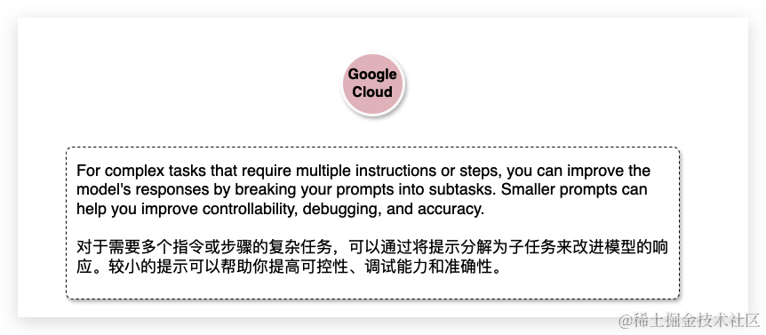
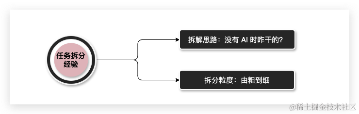
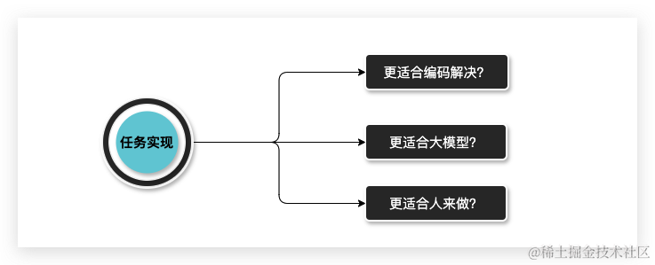
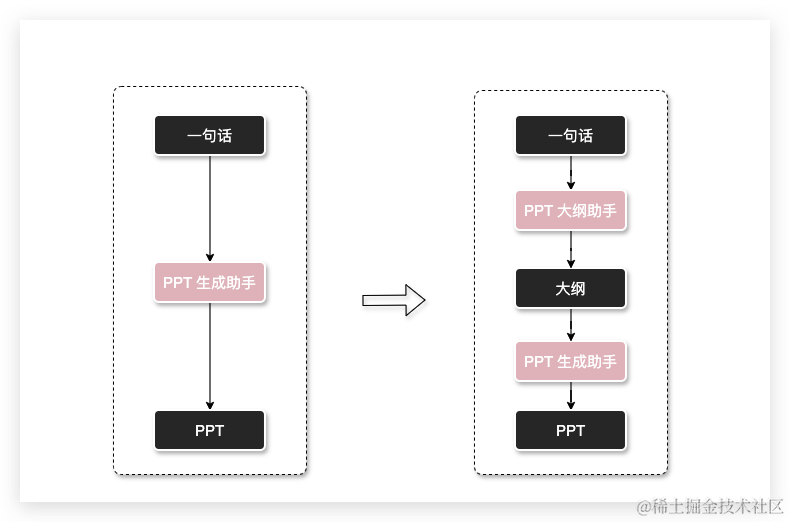
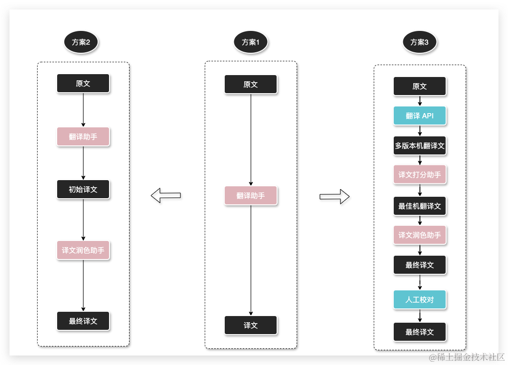

一、前言
所谓：“磨刀不误砍柴工”，在实践中我们发现，许多人在面对复杂任务时急于编写提示词，却忽略了合理的任务拆解，导致提示词调优需要多次迭代，各种技巧方法都尝试过，但效果依然不理想。
因此，在正式介绍各种高效的提示词编写技巧之前，本节将着重介绍一种应对复杂任务的有效方法：任务拆解。
二、为什么任务拆解更有效？
2.1 任务拆解符合人类的认知规律
根据 John Sweller 的认知负荷理论，人类的工作记忆容量有限。通过将复杂任务分解成小部分，可以有效减少认知负荷，从而提高信息处理和学习的效率。
2.2 任务拆解在各个领域均有广泛应用
无论是在软件开发、项目管理，还是日常生活中，任务拆解都能帮助我们更有效地组织和完成工作。通过将复杂的任务分解为更小、更可管理的部分，我们能够更好地理解每个步骤的要求，减少出错的可能性，并保持工作的连贯性和可控性。这种方法不仅能够提高工作效率，还能增强解决问题的能力，使我们在面对复杂任务时更加从容不迫。
2.3 任务拆解同样适用于提示词工程

如图所示，Google Cloud 在 《Generative AI on Vertex》 文档中提到，我们可以通过任务拆解来改进模型响应，从而提高可控性、调试能力和准确性。
三、任务拆解经验
3.1 任务拆分经验
根据实践总结出以下两条重要经验：
- 在进行任务拆解前，首先思考在没有使用大模型的情况下，我们是如何完成这项任务的，以便更好地理解任务的本质。
- 进行任务拆解时，应遵循由粗到细的粒度，避免任务拆解过于粗略或过于细致。通常情况下，先梳理任务流程，将整个任务拆解成几个大的子任务。如果某个子任务仍然过于复杂，则可以进一步拆解。

任务的拆解没有固定不变的标准，需要根据具体任务进行灵活调整。
3.2 拆分之后都交给 AI？
我们不应“手里拿着锤子，看什么都像钉子”，即不应盲目依赖技术，试图让大模型完成所有任务。

在实践中就遇到过有些同学不加思考就将所有任务都交给大语言模型，结果效果并不理想。任务拆解后我们需要思考，哪些任务适合编码解决，哪些任务更适合大模型处理，哪些任务则更适合人类来做。
例如：
-
提取大段文本中的所有手机号及其出现次数，更适合使用正则表达式编写代码实现。这样能够更快、更准确地提取和统计。
-
文章的润色任务，更适合由大模型来完成。通过编写提示词，可以创建「文章润色助手」智能体，轻松完成润色任务。
-
部门稿件发布前的终审任务，更适合由人来完成。虽然AI可以在稿件创作过程中提供辅助，但最终审核仍需人来确认，以确保无误。
四、任务拆解示例
4.1 PPT 生成任务
例如，我们想要设计一款用户通过「一句话」即可生成PPT的产品。直接编写一个「PPT生成助手」的提示词，可能会因为大模型的写作思路与用户的想法差异巨大，而难以生成令人满意的PPT。

根据任务拆解经验，我们可以首先问自己，在没有大模型的情况下如何完成这项任务。通常，我们会先确定PPT的总体框架，即编写大纲，然后根据大纲安排每一页的内容。因此，可以先开发一个「PPT大纲生成助手」，让大模型生成PPT的大纲，用户修改确认后，再通过一个根据大纲的「PPT生成助手」来完成PPT的生成任务，这样效果会更好。
4.2 文章翻译任务
如果需要完成文章翻译任务，很多人会选择直接编写一个「文章翻译助手」来完成整个翻译任务。然而，现阶段模型能力有限，很难通过一次翻译获得理想的效果。

根据任务拆解经验，我们可以首先问自己，在没有大模型的情况下如何完成这项任务。一些人会先进行初步翻译，然后进行润色；另一些人则会使用多个平台进行翻译，然后选择最佳版本再进行润色。这两种方法都能取得较好的效果。
根据第一种方法，我们可以设计方案2，先让「翻译助手」进行初步翻译，再通过「译文润色助手」进行润色，得到更高质量的译文。
根据第二种方法，我们可以设计方案3，先调用多个翻译API生成多个版本的译文，然后使用「译文打分助手」选择最佳译文，再通过「译文润色助手」对最佳版本进行润色。经过多个子任务处理后，译文质量会显著提升，最后再进行一轮人工校对，最终产出高质量的译文。
五、总结
本文介绍了应对复杂任务的有效方法：任务拆解。任务拆解有助于改进模型响应，提高可控性、调试能力和准确性。文章分享了以下任务拆解的经验：
-
进行任务拆解前，应先思考在没有AI的情况下如何完成任务。
-
进行任务拆解时，应遵循由粗到细的粒度，避免任务拆解过于粗略或过于细致。
需要强调的是，并非所有任务都应交由大模型完成。如果编程方式更有效、更高效，则应选择编程实现；如果某个子任务更适合大模型，则可以通过大语言模型来完成；而对于编程和大模型都无法很好完成的子任务，则需要人的参与。
文章还通过 PPT 生成和文章翻译两个示例，演示了如何根据上述任务拆解经验进行任务分解。合理的任务拆解至关重要，只有通过有效的任务拆解，后续编写提示词的效果才会更显著。
在编写提示词之前，你思考过是否需要进行任务拆解？你是如何进行任务拆解的？欢迎在评论区分享和交流。
COMMUNITY NOTES
读者评论
这篇文章暂时没有读者留言。